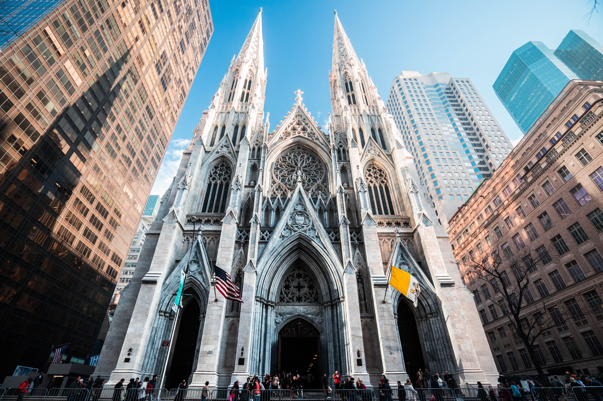

Top Attractions and the Perfect Itinerary for Your Irish Adventure
Welcome to Dublin
Dublin's iconic Ha'penny Bridge over the River Liffey
Dublin, Ireland's vibrant capital, is a city steeped in history, alive with culture, and brimming with charm. From ancient cathedrals to buzzing streets, literary legends to lush parks, this dynamic city offers a perfect blend of old-world elegance and modern energy. Whether you're a first-time traveler or a returning visitor, Dublin always has something fresh to uncover.
"When I die, Dublin will be written in my heart."
Let's dive into the city's top attractions—and map out the perfect itinerary for your stay.
Top Attractions in Dublin
1. Trinity College and the Book of Kells
The breathtaking Long Room at Trinity College
Why visit: Step into Ireland's most prestigious university and marvel at the Book of Kells, an illuminated manuscript created by Celtic monks over 1,200 years ago. The Long Room in the Old Library is one of the most photogenic spaces in Dublin, with towering shelves and the scent of history lingering in the air.
Persuasion: For book lovers and history buffs, this is a near-spiritual experience. It's not just a library—it's a gateway to Ireland's scholarly soul.
2. Dublin Zoo
African elephants at Dublin Zoo
Why visit: Located in Phoenix Park, Dublin Zoo is one of the oldest zoos in the world and home to over 400 animals. It's an immersive, well-designed space where kids (and adults) can learn about wildlife conservation while exploring themed habitats like the African Savanna and the Kaziranga Forest Trail.
Persuasion: It's educational, interactive, and perfect for families. The zoo offers wide paths for strollers, plenty of picnic areas, and hands-on exhibits that kids love. Plus, it's set in the gorgeous Phoenix Park—a bonus adventure waiting to happen.
3. Dublin Castle
The historic Dublin Castle courtyard
Why visit: A symbol of British rule for centuries, Dublin Castle is a fascinating site that now serves as a government complex and cultural venue. The lavish State Apartments and the Gothic Chapel Royal are must-sees.
Persuasion: Dublin Castle is the perfect place to understand Ireland's complex history—and capture some fairytale-like photos while you're at it.
4. Temple Bar District
The vibrant Temple Bar district
Why visit: Often misunderstood as "just the nightlife spot," Temple Bar is a historic quarter full of cobblestone charm, eclectic art galleries, vintage shops, and family-friendly cafés.
Persuasion: It's a great place to enjoy street performers, browse books at the famous Temple Bar Book Market, and soak in the city's artistic flair—without needing to stay out late.
5. St. Patrick's Cathedral

The majestic St. Patrick's Cathedral
Why visit: Built in honor of Ireland's patron saint, this majestic Gothic cathedral is the largest in the country. With stunning stained glass, intricate tile floors, and deep-rooted legends, it's both spiritually and visually impressive.
Persuasion: A place of reflection and awe, St. Patrick's Cathedral connects you to Ireland's soul in the most breathtaking way.
6. Phoenix Park
Wild deer roaming in Phoenix Park
Why visit: One of the largest enclosed parks in Europe, Phoenix Park is home to the Dublin Zoo, Victorian gardens, and even wild deer. It's the perfect escape from the city buzz.
Persuasion: If you need a breather or want a picnic under wide-open skies, this serene green space is a refreshing pause—and just a short bike ride from the city center. Kids will love spotting the deer or playing in the playgrounds.
7. Kilmainham Gaol
The historic Kilmainham Gaol
Why visit: A former prison turned museum, Kilmainham Gaol tells the moving story of Ireland's fight for independence. It's a sobering but essential experience.
Persuasion: This is more than just history—it's human resilience, captured in chilling silence and echoing corridors. You'll leave with a deeper understanding of what shaped modern Ireland. (Recommended for older kids and teens.)
3-Day Family-Friendly Itinerary for Dublin Explorers
Day 1: History & Wonder
Morning: Trinity College & the Book of Kells
Lunch: Bewley's Café on Grafton Street
Afternoon: Dublin Castle + Christ Church Cathedral
Evening: Dinner and live street music in Temple Bar (family-friendly cafés available)
Day 2: Animal Encounters & Nature
Morning: Explore Dublin Zoo in Phoenix Park
Afternoon: Picnic in the park, bike ride, or visit Áras an Uachtaráin (President's residence, open for tours)
Evening: Early dinner at a nearby family restaurant like The Lo-Cal Kitchen or PHX Bistro
Day 3: Freedom & Stories
Morning: Kilmainham Gaol (for older kids) or visit the National Museum of Ireland: Natural History for a child-friendly alternative
Lunch: Local eats near Merrion Square
Afternoon: Playtime in St. Stephen's Green or a storytelling session at The Ark (a cultural center for children)
Evening: Wind down with ice cream and sunset views at the River Liffey
Dublin's Rich Culture
Dublin has produced an extraordinary number of literary giants, earning its designation as a UNESCO City of Literature. Four Nobel Prize winners in literature hail from Dublin: W.B. Yeats, George Bernard Shaw, Samuel Beckett, and Seamus Heaney.
The city's pub culture is legendary, with traditional music sessions happening nightly in establishments like The Cobblestone and O'Donoghue's. Dublin is also home to the world-famous Abbey Theatre and numerous festivals throughout the year.
Why Visit Dublin?
Friendly Atmosphere: Dubliners are known for their warmth and wit, making visitors feel immediately welcome.
Compact Size: Most major attractions are within walking distance of each other in the city center.
Literary Heritage: Follow in the footsteps of Joyce, Yeats, Wilde, and other literary giants.
Vibrant Nightlife: From traditional pubs to modern cocktail bars, Dublin offers something for every taste.
Gateway to Ireland: Perfect base for exploring the rest of this beautiful country.
"Dublin is a city that never lets you down. It's like your favorite pub - comfortable, welcoming and full of good stories."